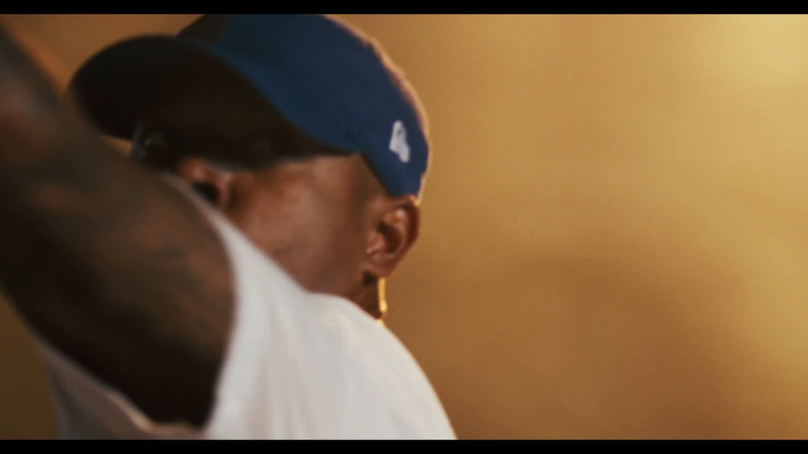

The quiet path

Walk until the sound thins. The path holds only what you brought, and the light already good on the water.
Nothing here asks you to stay. The page ends where the words end; there is no next thing waiting underneath it.
This is an example page, written for the preview. It is not a real article.